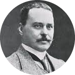

|  |
SIR RONALD ROSS(1857-1927) |
Ronald Ross was born in India in 1857 in Almora district, located in present day Uttarakhand. His father was a General in the British Army in India. Ross lived in India until he was eight. Then he was sent to a boarding school in England. He later studied medicine from St. Bartholomew Hospital in London.
When Ross was a small boy, he saw many people in India fall ill with malaria. At least a million people would die of malaria due to lack of proper medication. While Ross was in India his father fell seriously ill with malaria, but fortunately recovered. This deadly disease left an impression on his mind. When Ross returned to India as part of the British-Indian medical services, he was sent to Madras where a large part of his work was treating malaria patients in the army.
Ronald Ross proved in 1897 the long-suspected link between mosquitoes and malaria. In doing so, he confirmed the hypotheses previously put forward independently by scientists Alphonse Laveran and Sir Patrick.
Till that time, it was believed that malaria was caused by breathing in bad and living in a hot, humid and marshy environment. Ross studied malaria between 1882 and 1899. While posted in Ooty, he fell ill with malaria. After this, he was transferred to the medical school in Osmania University, Secunderabad. He discovered the presence of the malaria parasite within a specific species of mosquito of the genus Anopheles. He initially called them Dapple-wings. Ross made his crucial discovery while dissecting the stomach of a mosquito fed on the blood of a malaria victim. He found the previously observed parasite. Through further study, he established the complete life cycle of this parasite. He contributed majorly to the epidemiology of malaria and brought a method to its survey and assessment. Most importantly, he made mathematical models for further study. In 1902, Ross was awarded the Nobel Prize in Medicine for his remarkable work on malaria and was conferred Knighthood as mark of his great contribution to the world of medicine. In 1926, he became the Director of the Ross Institute and Hospital for Tropical Diseases in London, which was founded in his honour. Ross advocated the cause and prevention of malaria in different countries by conducting surveys and initiating schemes in many places, including West Africa, Greece, Mauritius, Sri Lanka, Cyprus and many areas affected by the First World War.
In India, Ross is remembered with great respect and love. There are roads named after him in many Indian towns and cities. The Regional Infectious Disease Hospital at Hyderabad was named after him as Sir Ronald Ross Institute of Tropical and Communicable Diseases, in recognition of his services. The building where he worked and actually discovered the malaria parasite, located in Secunderabad near the old Begumpet airport, is a heritage site and the road leading up to the building is named Sir Ronald Ross Road.
A small memorial on the walls of SSKM Hospital Kolkata commemorates Ross' discovery. The memorial was unveiled by Ross himself, in the presence of Lord Lytton, on 7 January 1927.